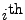
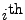

Next: NONMEM Mixed Effects Model
Up: Appendix: Population Level Models
Previous: Appendix: Population Level Models
Contents
SPK's mixed effects model for the  value of the
 individual's data is
value of the
 individual's data is
where
 is a vector of fixed effects parameters,
and is the individual's vector of random effects parameters.
is a vector of fixed effects parameters,
and is the individual's vector of random effects parameters.
The output of SPK's population level estimation is
which are estimates for the optimal values for the fixed
effects parameters along with estimate for the optimal values
for each individual's random effects parameters.
Mitch Watrous
2007-12-17